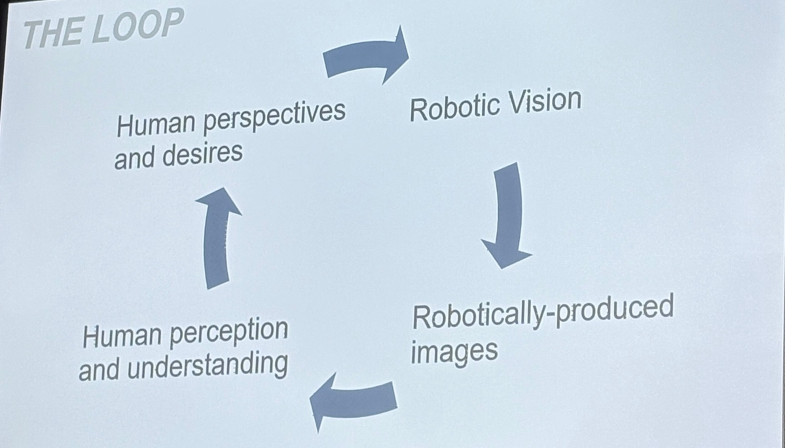
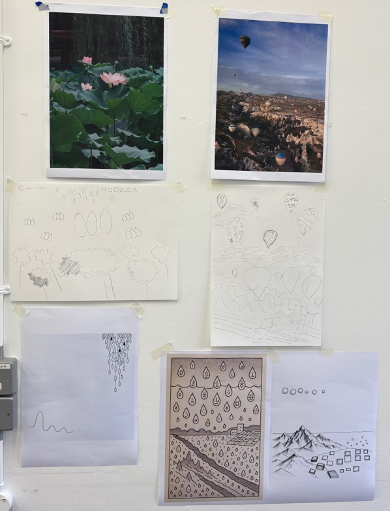
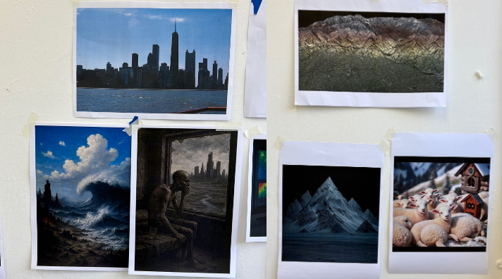

In the workshop themed “Loops of Perception”, I gained deeper insights into the differences between human and machine vision, as well as the relationship between descriptive language and image generation. The “loop” model proposed in the course (Human desires → Robotic vision → Machine-generated image → Human interpretation → …) reveals that perception is not linear, but a multi-dimensional, continuously feedbacking cycle.

We conducted a fascinating experimental activity:
- Working in pairs with backs turned to each other:
- One person held an image but could not name its content, only describing “lines,” “shapes,” “directions,” “relative positions,” etc.
- The other drew the image’s outline based on the description.
- Finally, we input the descriptive sentences into AI to let it “draw” an image too.
This experiment was both fun and enlightening:
- Human-drawn pictures were usually less detailed but faithful to the description.
- AI-generated images were imaginative but prone to deviations.
- Notably, when no colour was specified, AI would “imagine” colours on its own a surprising outcome.
This shows that the language→image process isn’t mere information compression, but a creative reinterpretation.

Next, we extracted keywords from photos (such as “sense of order,” “loneliness,” “flow,” “mechanical,” “density,” etc.) and tried to use these keywords to describe the atmosphere of the images.
Then we swapped keyword groups and rewrote descriptions of the images based on each other’s words. This session made me realize that image perception is strongly influenced by linguistic frameworks different word combinations can lead you to notice completely different details.
Finally, we input these keywords into image-generating AI to observe how AI would “misinterpret” or “reinterpret” the intentions behind these words. This step was particularly interesting: many generated images didn’t resemble the original photos, but unexpectedly created new visual narratives, proving that language can guide AI perception even more powerfully than visual cues themselves.

Reflection
The workshop made me realize:
- Language isn’t just for “expression” it’s a form of “creation”.
- Images aren’t static, they depend on human emotions and experiences.
- AI and human visual understanding aren’t binary opposites, but partners that can co-construct meaning.
I can apply this language-visual interaction logic to future projects, such as:
- In the Winchester Cathedral AR project, inviting users to describe the cathedral as they remember it,” then using AI to generate visual content that overlays memorial landscapes with “real-world scenes for comparison.
- Creating a keyword prompt interactive installation where different people’s descriptions of an image generate real-time animated variations.
This interplay between language and visuals reveals that AI isn’t just a tool, but a collaborator in a dynamic creative loop where human narratives and machine interpretation mutually shape new forms of expression.